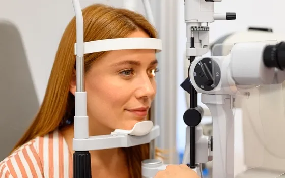
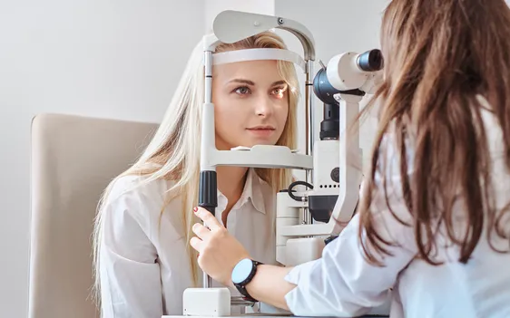

What’s New
Keep up-to-date on the latest vision-related news and eye care events in our Practice.
Healthy Aging Eyes: What to Know About Presbyopia
Changing near vision is a common part of getting older. Routine eye exams can track these changes and help keep everyday tasks clear and comfortable.
Read More
Summer Eye Health Tips from Eye Shop
Summer in Houston brings bright sunshine, outdoor activities, and unique challenges for your eye health. This blog shares practical tips for protecting your vision, managing dry eyes, choosing the right eyewear, and scheduling eye exams for the whole family. You'll also find helpful advice for keeping children's eyes healthy during summer break and recognizing when it's time to seek professional care.
Read More
Hydration & Dry Eye: What Your Eyes Are Trying to Tell You
Dry eye symptoms often persist even when you stay hydrated. This blog explains how hydration connects to tear film health and why it is only one piece of the puzzle. It also covers how Houston’s climate, indoor air, and daily habits affect eye comfort. You will also find practical tips and guidance on when to seek professional dry eye care.
Read More
Healthy Eye Care Habits: Prevent Early Vision Loss
Many eye diseases develop without early symptoms. Regular comprehensive exams and healthy habits reduce the risk of permanent vision loss. Ongoing care at Eye Shop protects your eyesight at every stage of life.
Read More
New Year New Vision: Eye Health Tips in 2026
Starting the new year with healthy habits includes taking care of your eyes. In this blog, we share practical vision care tips for 2026. From reducing digital eye strain to choosing UV-protective eyewear, small changes can make a big impact. Make 2026 the year you prioritize your vision.
Read More
Contact Lenses vs Frames: Which Is the Right Fit for You?
Choosing between eyeglasses and contact lenses can be tricky, especially with Houston’s hot climate, screen-heavy jobs, and allergy season. Whether you need crisp vision, comfort, or something stylish, the right option depends on your daily habits and eye health. Our eye doctors at Eye Shop help you find the perfect fit.
Read MoreAllergies and Your Vision: What Houston Patients Should Know
Allergies don’t just make you sneeze—they can also cause itchy, watery, red eyes that interfere with your daily life. In Houston, pollen, dust, and mold are common triggers that affect vision and comfort. Learn how our optometrists use advanced technology to identify allergy-related eye problems and pr
Read MoreDry Eye Prevention Tips for Long-Term Comfort
Dry eye disease can often be prevented with a few simple lifestyle adjustments like staying hydrated, limiting screen time, and using the proper eyewear. Avoiding common triggers such as air conditioning, wind, and improper makeup removal can also help keep your eyes comfortable. When symptoms persist, Eye Shop offers effective dry eye treatments to support long-term relief.
Read More
Don’t Skip Your Next Eye Exam: Here’s Why
Regular eye exams are crucial for maintaining healthy vision and catching potential issues early. This blog outlines what to expect during an eye exam, reasons not to skip it, and tips for keeping your eyes healthy between appointments.
Read More
Workplace Eye Wellness: Protecting Your Vision on the Job
This blog explores the importance of workplace eye wellness and how to protect vision in office environments. It highlights common issues such as digital eye strain, dry eyes, and glare from poor lighting, explaining how they affect productivity and comfort. Learn practical solutions like the 20-20-20 rule, proper screen positioning, reducing glare, and using blue light filters are discussed to help prevent eye strain.
Read More
The Importance of Having an Annual Eye Exam at Eye Shop
This blog delves into the crucial reasons for prioritizing regular eye exams, highlighting the long-term benefits for eye health and overall well-being.
Read MoreTips to Manage Glaucoma
In this Glaucoma Awareness Month, explore essential tips for managing glaucoma effectively. Discover how proactive measures and regular screenings can safeguard your vision.
Read MoreHow Safe Is It To Rinse Your Eyes With Tap Water?
While many people turn to tap water to rinse their eyes, it may not always be safe. Find out when to use water, and what to use when you can't!
Read MoreYour Eyes As A Window Into Your Whole-Body Health
Did you know that your eyes are often the first line of defense when it comes to detecting and treating many common systemic diseases and conditions? It's true!
Read MoreThis Winter, Don’t Let Dry Eyes Get the Best of You
The struggle against dry eye every winter is real. Fortunately there are eye treatments and home remedies to relieve symptoms.
Read MoreAutoimmune Disease and Dry Eye: Is There a Connection?
Having an autoimmune disease like Sjogren's syndrome, rheumatoid arthritis or lupus can affect your tear production and eye health.
Read More10 Ways to Give Your Eyes Some Love This Valentine’s Day
With Valentine’s Day just around the corner, it’s time to give your eyes some love. Here are 10 ways you can give your eyes the attention they deserve, to protect them both now and in the future.
Read More